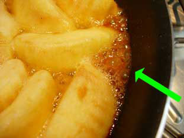
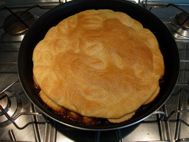
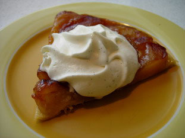

Tarte Tatin
La recette pas à pas
-
5 min
Vous aurez besoin d'un moule, d'une casserole ou d'une poêle, qui puisse aller à la fois sur le feu et dans le four, quelque chose comme un plat à gratin anti-adhésif.
Découpez votre pâte feuilletée au diamètre de ce moule, piquez le dessus et remettez la au frigo en attente. - 10 min Épluchez 1 kg de pommes, coupez les en 4 ou en 8 suivant leur grosseur, retirez le cœur.
-
10 min
Dans votre moule sur feu moyen, faites fondre 60 g de beurre, ajoutez 120 g de sucre en poudre.
Il peut vous sembler qu'il y ait beaucoup de beurre, mais c'est normal car les pommes vont en absorber une bonne partie. -
2 min
Mettez les quartiers de pommes dans le beurre fondu, serrez les au maximum les unes contre les autres.
Laisser cuire le temps que le sucre caramélise.
Préchauffez votre four à 180°C (356°F). - 15 min Au bout de 10 minutes de cuisson environ, le sucre a commencé à caraméliser, le fond de la casserole bouillonne.
-

La cuisson est suffisante quand le sucre qui est visible au bord de la poêle est couleur caramel clair.
- 5 min Mettez le moule au four pour 5 minutes.
- 3 min Au bout des 5 minutes, sortez le moule et posez dessus le cercle de pâte feuilletée.
- 20 min Puis remettez au four et laissez cuire environ 20 minutes.
-  Sortez du four quand la pâte est dorée.
-
3 min
C'est maintenant le moment délicat de la recette, mettez des gants de cuisine pour ne pas vous bruler, et posez le plat de service sur la tarte Tatin.
Il faut faire cette opération tarte chaude, sinon en refroidissant elle attache au fond du moule. -
1 min
Retournez d'un coup l'ensemble...
- 1 min ... puis retirez le moule : votre tarte Tatin est une réussite !
-  A mon humble avis, rien n'est meilleur avec la tarte Tatin tiède qu'un peu de crème chantilly.
Le mot de la fin
La recette de la tarte Tatin nous arrive du centre de la France, via une jolie histoire sans doute un peu romancée, celle des sœurs Tatin qui tenaient une auberge à Lamotte-Beuvron et ont inventé cette tarte "à l'envers" qui porte maintenant leur nom.
Source
Maison, mais d'après une recette de Gaston Lenôtre.